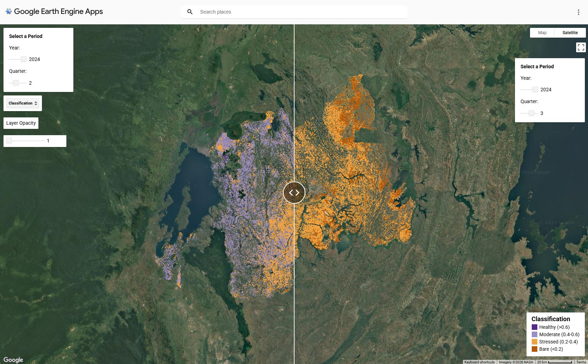

01The brief
The poster session was a course assignment within ISU's AI in Space programme. The brief: build a working artefact that demonstrates the integration of artificial intelligence with Earth-observation data, present it on a digital poster, and defend it in front of a jury panel. Our team chose food security as the application domain, and Rwanda as the study area, for reasons specific to both the science and the politics of this kind of work.
Agriculture accounts for over 60% of Rwanda's employment and roughly one-third of its GDP, but the country remains vulnerable to climate variability, soil erosion, and periodic food insecurity. Its diverse topography and well-managed agricultural zones make it a useful natural laboratory for vegetation-health monitoring. The Rwanda Space Agency, established in 2020, anchors the country's commitment to using space technology for sustainable development. And the work aligns with three UN Sustainable Development Goals — SDG 2 (Zero Hunger), SDG 13 (Climate Action), SDG 15 (Life on Land) — plus African Union Agenda 2063 Goal 5 (Modern Agriculture for Increased Productivity).

02Method
Region of interest from AI
The agricultural area-of-interest (AOI) over Rwanda was generated using AI-assisted segmentation rather than handcrafted boundaries. This is the AI-in-Space pivot of the assignment: instead of using AI as a downstream classifier, we used it upstream to define the analysis zone — a pattern that scales much better for continental-scale rollout.
Cloud masking and atmospheric correction
Sentinel-2 L2A imagery was cloud-masked and atmospherically corrected within Google Earth Engine, ensuring data quality and reliability over the multi-year time series. Standard practice, but worth doing properly — cloud cover is the single largest source of false-positive vegetation stress signals if you skip it.
Enhanced Vegetation Index (EVI)
EVI was computed from Sentinel-2 bands B2 (Blue, 490 nm), B4 (Red, 665 nm), and B8 (NIR, 842 nm). EVI rather than NDVI because EVI is less saturated in densely vegetated areas (relevant in Rwandan agricultural zones) and incorporates the blue band to correct atmospheric aerosol effects. Healthy vegetation tracks toward EVI ≈ 1; stressed vegetation toward 0.
Four-category classification and split-panel app
EVI values were thresholded into four health categories: healthy, moderate, stressed, bare. The output is served as an interactive split-panel web app: users see the true-colour Sentinel-2 image on one side and the classification overlay on the other, at any date in the 2020–2024 archive. The split-panel format is deliberate — it lets a non-specialist see the classification's relationship to the underlying imagery without having to trust the model blindly.
Temporal coverage
The analysis covers 2020 to 2024 across Q1 (Jan–Mar), Q2 (Apr–Jun), Q3 (Jul–Sep), and Q4 (Oct–Dec), aligning with Rwanda's bimodal agricultural calendar (two rainy seasons, two harvests). Quarterly cadence smooths out cloud-driven gaps in the time series while preserving the seasonal signal that matters for crop monitoring.
03Future roadmap — GeoAI for African food security (2025–2035)
The poster's "future" section sketches a three-phase, ten-year roadmap for scaling this prototype into a Pan-African GeoAI ecosystem. The roadmap aligns with SDG 2 / 13 / 15 and African Union Agenda 2063 Goal 5.
Phase I — Upstream (2025–2027): Data & Information
Build the EO-AI foundation: integrate Sentinel-1, 2, 3, and 5P into unified African data cubes (ESA / Copernicus / AfSA). Deploy cloud-native GEE environments hosted in Africa (GMES & Africa / RCMRD). Produce annual 10 m cropland and crop-type masks (AfriCultuReS / FAO). Establish open GeoAI training repositories (ISU / OpenEO).
Phase II — Midstream (2027–2031): Innovation & Deployment
Operationalise temporal CNN / Transformer models for crop stress and yield prediction. Fuse Sentinel + CHIRPS + SoilGrids + ET₀ for evapotranspiration and moisture mapping. Develop interactive policy dashboards for vegetation and rainfall anomalies. Build agricultural digital-twin scenarios (ESA Φ-Lab / Destination Earth).
Phase III — Downstream (2031–2035): Application & Impact
Deliver AI-driven advisories to farmers via SMS and WhatsApp on planting, irrigation, and stress alerts. Integrate vegetation indices into climate-risk finance (micro-insurance, credit). Standardise EO indicators for SDG 2.4 (sustainable agriculture). Establish a continental GeoAI Observatory with open APIs for AgTech start-ups (AfSA / UNOOSA / ISU).
Targets by 2035: 90% of African nations using GeoAI dashboards, 40% reduction in crop-loss uncertainty, 100 million hectares under annual EO-based monitoring, 50+ new GeoAI-based AgTech start-ups, 10 million smallholder farmers reached.
04Try it
The interactive web dashboard is live and free to use:
05Acknowledgements
This project was completed as part of the AI in Space Poster Session of the Master of Space Studies at the International Space University. Thanks to Dr. Moulay Anwar Sounny-Slitine for their mentorship, and to the jury panel for valuable feedback. Appreciation is extended to UNOOSA for promoting the peaceful use of space, and to the Rwanda Space Agency for advancing national Earth-observation capacity in support of the UN SDGs and Agenda 2063.
06Why this is on a space-engineering portfolio
The poster format is small by design — a single deliverable, a single defence in front of a jury — but the work it represents is exactly the kind of downstream Earth-observation service that the European space community has been moving toward for a decade. AI-assisted AOI generation, EVI classification, deployed split-panel app, time series across a real agricultural calendar, and a roadmap that scales the prototype into a Pan-African ecosystem. The same instincts apply at agency or prime scale: take a free public dataset, do the engineering work to make it credible, and ship it in a form a non-specialist can act on.